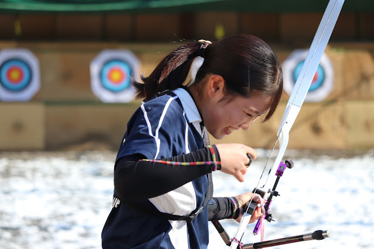

４回目の今日は国際社会科学部国際社会科学科の島田好乃さんです。島田さんは来年度の副女子リーダーを務めます。いつも明るくて笑顔が印象的な彼女に部の魅力を語っていただきました！
国社の良いところは、英語でのコミュニケーション能力を強化できるところです。1年生の必修の英語の授業は、毎日のようにあり少し大変でしたが…(笑) その分、クラスのお友達もでき、英語力を高めることができるのは国社の強みだと思います。履修に関しては、英語科目だけでなく、専門科目（法学・経済学・経営学・地域研究・社会学・特殊講義など）で幅広いジャンルから自分の興味のある授業を履修できます。また、授業を毎回受けて、日々の課題をきちんとこなしていれば、テストも単位もほぼ問題ないと思います。アーチェリー部には国社の部員も多く在籍しているので、履修もテストもいつでも相談してください！
実は入学前からアーチェリー部が気になってたんです…！国社で出来たお友達を誘って体験に行ったら、先輩方がとても優しく、その雰囲気の良さに惹かれて入部を決めました！
国社の授業や課題は少し大変ですが…！アーチェリー部の射場は学内にあるので、空き時間にいつでも練習しに行けることも強みです。そのため、自分の都合に合わせて練習できる環境があったからこそ、部活と学業を両立させることができました。
アーチェリー部の魅力は、部の雰囲気が良いところです！同期同士はもちろんのこと、先輩後輩とも自然と仲良くなれます。とにかく射場での時間は楽しいです！アーチェリーは個人競技ではありますが、互いに応援しあって喜びあえるチームスポーツでもある、そんな絆を感じることができるのがアーチェリー部の魅力だと思います。
私は、白と黒を基調に、ピンクと紫を差し色にして、弓具をこだわりました。結構お気に入りです！
私は塾でバイトをしているので、基本バイトは夜です。そのため、バイトのある日は朝から練習に行き、練習時間を確保しています。早起き頑張ってます、、！
ご入学おめでとうございます！ぜひアーチェリー部で共に充実した4年間を過ごしましょう～！！射場で待ってます！
いかがだったでしょうか。部にはこのように部活とバイトを両立している部員が数多くいます。皆さんも部が気になったら４月から始まる体験会にぜひぜひお友達を誘って来てみてください！！次回は法学部法学科の麻生真太郎くんです！